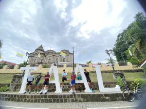
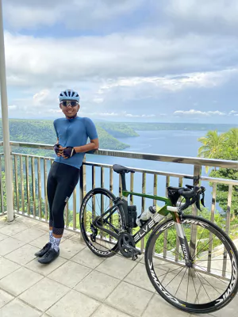
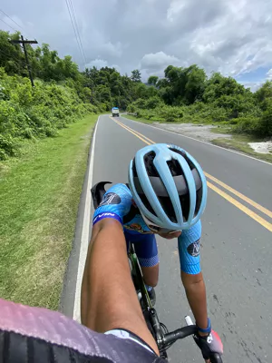
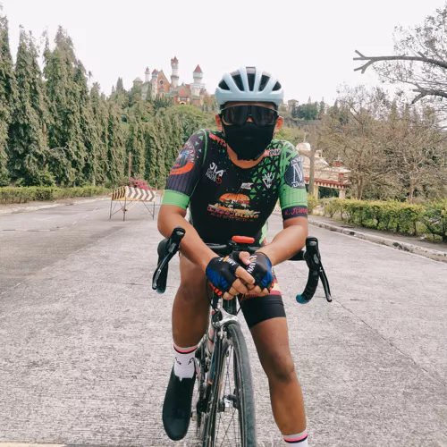

Most famous places
Mabini, Batangas
(Mt. Gulugod Baboy) Mabini, officially the Municipality of Mabini, is a 1st class municipality in the province of Batangas, Philippines. According to the 2020 census, it has a population of 50,858 people. Mabini is known for its diving and snorkeling sites. It is named after Apolinario Mabini, a Filipino revolutionary hero
(Mt. Gulugod Baboy) Mabini, officially the Municipality of Mabini, is a 1st class municipality in the province of Batangas, Philippines. According to the 2020 census, it has a population of 50,858 people. Mabini is known for its diving and snorkeling sites. It is named after Apolinario Mabini, a Filipino revolutionary hero

Taal, Batangas
(Minor Basilica of St. Martin of Tours) Taal is famous for its old ancestral houses, one particular ancestral house (now a museum) where Marcela Coronel Mariño de Agoncillo grew up in Taal, Batangas built in the 1770s by her grandparents, Don Andres Sauza Mariño and Doña Eugenia Diokno Mariño, (added by Slavstan Mariño). Its poblacion (central business district) is designated as a National Historical Landmark.[5] The municipality is known as the Balisong and Barong Tagalog Capital of the Philippines.
(Minor Basilica of St. Martin of Tours) Taal is famous for its old ancestral houses, one particular ancestral house (now a museum) where Marcela Coronel Mariño de Agoncillo grew up in Taal, Batangas built in the 1770s by her grandparents, Don Andres Sauza Mariño and Doña Eugenia Diokno Mariño, (added by Slavstan Mariño). Its poblacion (central business district) is designated as a National Historical Landmark.[5] The municipality is known as the Balisong and Barong Tagalog Capital of the Philippines.

Cuenca, Batangas (Lumampao Don Juan)
Cuenca, at the foot of Mount Maculot, formed part of nearby
San Jose during the Spanish era until it was separated in
1872. It gets its name from the Spanish word for watershed.
The town's major tourist draw is Mount Maculot, a 700-meter (2,300 ft) high mountain beside Taal Lake, also a sacred site to ancient Tagalog religion and Christianity. Cuenca has a growing number of private resorts, mostly mid-range to splurge.
The town's major tourist draw is Mount Maculot, a 700-meter (2,300 ft) high mountain beside Taal Lake, also a sacred site to ancient Tagalog religion and Christianity. Cuenca has a growing number of private resorts, mostly mid-range to splurge.
San Nicolas, Batangas (San Nicolas Baywalk)
The place of San Nicolas is such the smallestplace here in
Batangas.It has a measurement of 14.37 square km (55sqm) (2)
land area includes southero half of Taal Volcano.Thisplace is
really blessed because it contains beautiful places and also
this is a historical place.This is the only place that you can
find the real beauty of nature and besides,the San Nicolas
beauty will not be accomplished without the trust worthy
people that has a wonderful mission to make San Nicolas to be
one of tourist spots here in Batangas.

Talisay, Batangas (Talisay - Laurel Road)
Being one of the towns closest to Taal Volcano, Talisay has
fertile soil that is used to cultivate seedlings of a variety
of trees, vegetables and flowering plants

Lemery, Batangas (Fantasy World)
Fantasy World was never completed, but it has become a famous
landmark in Batangas. Yep, Batangas. Contrary to a popular
misconception, Fantasy World is NOT in Tagaytay. It rises in
the middle of the rolling hills of Barangay Mayasang in
Lemery, Batangas. I know this for sure because I live nearby.
I pass by this castle going to or coming from Manila.